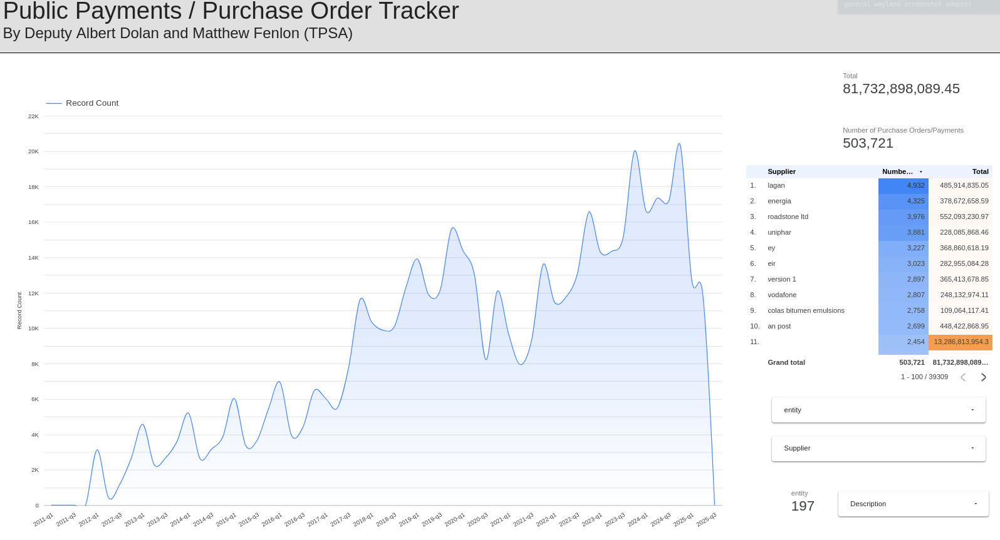
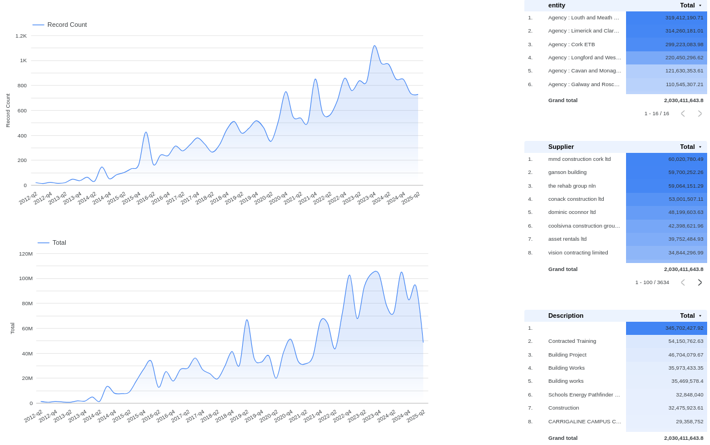

Hosted by:

Public procurement generates vast amounts of transactional data, but that information stays fragmented across departments, agencies, and reporting systems. SPARÁN consolidates this distributed data into a single analytical framework, bringing together payment records published by state entities right across the public sector.
The project addresses a fundamental data infrastructure problem: individual agencies publish payment records in inconsistent formats and at varying levels of detail, which makes cross-government analysis practically impossible. By building data pipelines to extract, clean, and standardise these records, we have created a comprehensive view of state expenditure flows that is accessible to researchers, journalists, policymakers, and citizens alike.
Our consolidated database tracks payment recipients, contract purposes, amounts, and originating entities thereby revealing spending concentration patterns, supplier market structure, and variations in reporting practice across the public sector. That visibility supports evidence-based analysis of procurement efficiency, market concentration, and the shifting boundary between direct state capacity and contracted services.
| Question | What the tracker shows |
|---|---|
| Who gets paid | Payment recipients from right across the public sector, in one place. |
| What for | The stated purpose of each contract or payment, standardised across sources. |
| Who is paying | The originating department, agency, or public body behind every record. |
| Concentration | How much expenditure flows to a small number of large suppliers. |
| Reporting quality | Where publication practice is detailed, and where it is thin. |


Sparán is the Irish word for a wallet - where public money is kept, and where everyone is entitled to see.
SPARÁN is built and maintained by The Problem Solving Association CLG. If you are a researcher, journalist, or public body who would like to work with the underlying data, or if you spot something that looks wrong, we would like to hear from you.
Hosted by: